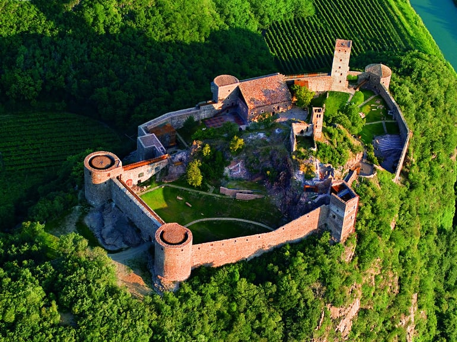

I'm ready to learn web dev. I'm beginning this journey
This page demonstrates what I've learned so far.
Let me tell you how:
-- I learn HTML, CSS, and Javascript.
-- I plan out my schedule and stick to it!
-- I use resources from MDN.
My Daily Schedule
Every day, I eat breakfast and shower right when I wake up.
I brush my teeth, and do my skincare routine before checking my planner.
After viewing and/or writing what I'll be doing, I'll start what I have planned!
Right now, it mostly consists of studying...
I make it a point to take breaks for food, and to get outside and move.
My skincare routine
In the morning, I use:
- 'Cerave Hydrating Facial Cleanser'
- This cleanser helps my skin retain moisture, especially alongside other, more harsh products.
- 'Cerave AM Facial Moisturizing Lotion'
- SPF is essential in a routine, and should be reapplied again later if necessary.
- 'Cerave Eye Repair Cream'
- No matter my sleep/diet/etc., I somehow always have dark eyes, which this helps greatly to combat.
And at night, I use:
- 'Cerave Acne Foaming Cream Cleanser'
- Other medications like salicylic acid and adapalene are too harsh, but benzoyl peroxide is okay.
- 'Cerave PM Facial Moisturizing Lotion'
- My skin doesn't handle oil well, so an oil-free, lightweight moisturizer is important, at night especially.
- 'Cerave Resurfacing Retinol Serum'
- I use this about 3 nights/week to help relieve acne scarring, though it is too harsh for daily use.
- 'Cerave Nightly Exfoliating Treatment'
- I use this just once a week, and not with the serum, as my skin is sensitive to exfoliation and peels easily.
I'm not a big believer in brand loyalty, and like to read labels closely.
Cerave has had consistently good products, and decently affordable.
They're the only things that are both gentle and effective enough for my skin.
I'm still working on the right schedule/rotation for the Retinol and Exfoliator.
Places I'd like to visit:
I'd like to see Northern Italy, places like Torino or Milan. There is a museum in the mountains near Bolzano in South Tyrol where I've thought about getting married. It's located here:
Messner Mountain Museum Firmian (Sigmundskron Castle)Sigmundskronerstr. 53
I-39100 Bozen
You can learn more about the mountain and the museum by clicking the image below:

My hobbies:
Keyboards:
I really like building custom mechanical keyboards, and have personally built 3 fully custom builds!
The embedded video below showcases the first keyboard I modified before getting into building from scratch.
It's a GK84 (a cheap keyboard from China) with lubed and filmed Gateron Optical Silent Yellow switches and some case foam. I currently use a split, ortholinear board that I like much more, but haven't recorded a proper sound test for that one yet.
Sim Racing:
I love racing games as a whole, inlcuding the less 'realistic' modern games, retro games, all the way down to Mario Kart. (I do still take Mario Kart more seriously than I should, including modifying an old Wii to play online lobbies.)
My favorite, however, are the simulators, or sim racing games, which attempt to mimic real life racing surface physics, aerodynamics, weather, etc. to make for a gaming experience that is as close to the real thing as possible.
The video embedded below is from one of my favorite sims, Assetto Corsa Competizione, in an online race I participated in. A.C.C., a GT3 and GT4 exclusive sim, is one of the most detailed and advanced.